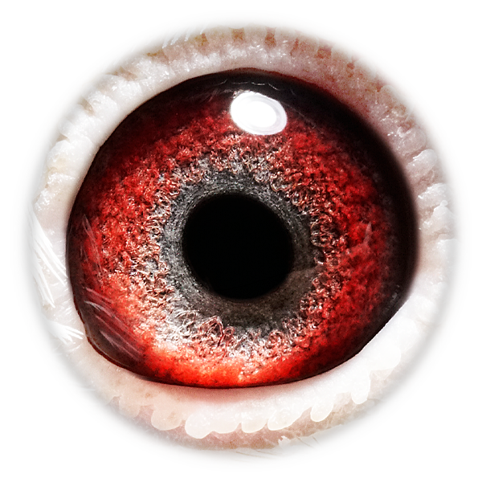
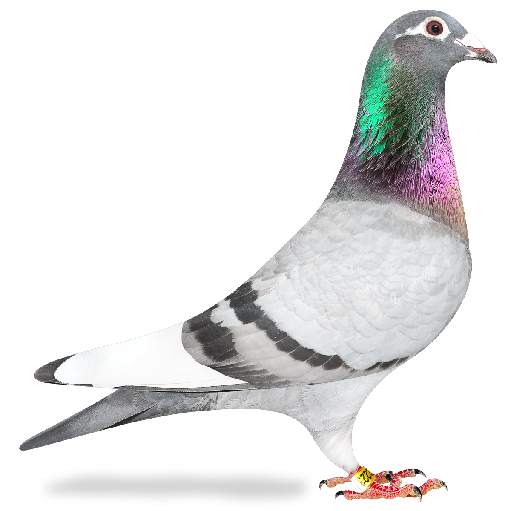

Kweekprofiel
GB24-X22223 · Excelsior Stud

Blizzard / Pierre Beyl
GB24-X22223
Blizzard Whizz is sterk ingeteeld op Blizzard King Kittel en daardoor bijzonder interessant als kweekduiver.
Beschikbaar beeldmateriaal van Blizzard Whizz.

Eén duidelijke stamboom per duif, zodat de pagina rustig en professioneel blijft.
